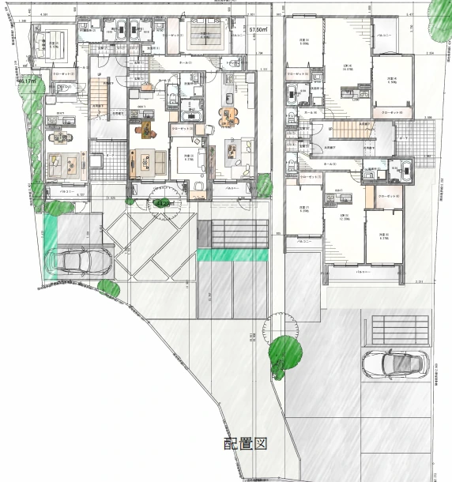

Concept
暮らし方の幅を、
土地全体の価値へ。
近鉄小倉駅・JR小倉駅へ徒歩10分。京都へ通う日常と、宇治で整う暮らし。そのあわいに位置する小倉町天王に、1LDKと2LDKを組み合わせた二棟構成の賃貸住宅を計画します。
第1期は、全戸南向きのゆとりある1LDK9邸。第2期は、60㎡台の2LDK6邸。住まう人のライフステージを広く受け止めながら、土地全体の価値を段階的に高める提案です。
Residential Mix
1LDKと2LDK。
二つの住まい方で、需要の幅に応える。
Phase 01
ゆとりある1LDK / 9邸
42.34㎡〜57.50㎡。一般的なコンパクト1LDKとは異なり、住戸全体にゆとりを持たせた計画。DINKS・新婚・共働き二人世帯・ゆとりを求める単身層まで、幅のある入居ニーズを見込みます。
専有面積
42.34㎡〜57.50㎡
42.34㎡ ×144.20㎡ ×246.17㎡ ×356.05㎡ ×157.50㎡ ×2
Phase 02
60㎡台2LDK / 6邸
60.66㎡・61.33㎡の2LDKを計画。二人暮らしから小世帯、子育て初期世帯まで対応しやすい住戸構成により、1期目の1LDKとは異なる入居層を受け止めます。
専有面積
60.66㎡〜61.33㎡
60.66㎡ ×361.33㎡ ×3

Site Composition
二棟で描く、
敷地全体の住まい方。
1LDK棟と2LDK棟を並べることで、ひとつの敷地に異なる暮らしの受け皿を整える計画です。軽やかな1LDKと、落ち着きある2LDK。それぞれの棟が役割を持ちながら、全体として小倉町天王に穏やかな住環境をつくります。
1LDK棟9邸｜二人暮らし・新婚・ゆとり志向に応える住戸構成
2LDK棟6邸｜小世帯・子育て初期世帯まで見据えた住戸構成
Two Buildings15邸｜単一間取りに偏らない、需要分散型の土地活用
Location Value
2駅徒歩10分、
日常が整う小倉町天王。
近鉄小倉駅徒歩10分
JR小倉駅徒歩10分
サンディ小倉店徒歩1分
セブンイレブン宇治小倉天王店徒歩1分
ニンテンドーミュージアム徒歩4分
京都銀行小倉支店徒歩8分
Plan Viewer
二棟の計画を、図面で見る。
全体配置図｜1LDK棟と2LDK棟を組み合わせた二棟構成
Architectural Atmosphere
静けさに、奥行きを与える佇まい。
二棟でありながら、外観のトーンを揃えることで街並みに落ち着いた連続性をつくります。1LDK棟は軽やかに、2LDK棟は木調格子をアクセントに。暮らしの規模に合わせて表情を変えながら、小倉町天王に静かな存在感を描きます。
Interior Atmosphere
内側に宿る、
静かな心地よさ。
外観の品位だけでなく、住まいの内側にも穏やかな時間を描きます。木の温度感、柔らかな照明、落ち着いた家具のトーン。日常の何気ない時間が少し整って見えるような、暮らしの余韻を大切にした空間イメージです。


Visual Gallery
光の時間で見る、二棟の表情。


Closing Statement
二つの暮らしが、
ひとつの風景になる。
2駅徒歩10分の利便性、南向きの光、1LDKと2LDKの住戸構成。異なる住まい方を静かに重ねながら、
小倉町天王の土地に、長く選ばれる暮らしの風景を描きます。